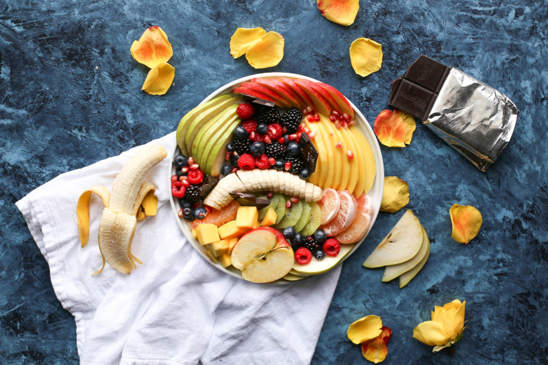

Фрукти, соки та фруктоза
Фрукти vs кондитерські вироби
Про користь фруктів нам приблизно відомо ще з дитинства, бо "вітаміни". У той же час, у фруктах справді міститься чимало цукрів. Тоді чим вони ліпші за інші солодощі?
Щонайменше, трьома факторами:
Вміст води у фруктах - близько 90%, а в переважній більшості кондиторських виробів - до 5%;
Вміст цукрів у фруктах 10-15% (у фініках 65%), а в солодощах іноді більше 90%;
Присутність у фруктах інших цінних нутрієнтів, у тому числі, вітамінів, мінералів, антиоксидантів, а також клітковини, у той час, коли солодощі можуть ставати додатковим джерелом хіба що насичених та транс-жирів.
Фрукти vs соки
З одного боку, фруктові соки асоціюються у нас із "вітамінами-мінералами", з іншого – іноді туди додають "ложку дьогтю" у вигляді доданого цукру. Але навіть якщо це не якийсь там нектар із доданим цукром, у соках значно менше клітковини, аніж у фруктах, відповідно усі вигоди, пов'язані із клітковиною, будуть вираженіші слабше. Окрім того, цукри із соків таким чином швидше і більше потрапляють у кров, спричинюючи отой осоружний стрибок.
У деяких дослідженнях показано, що споживання цільних фруктів асоційовано із зниженням ризику виникнення діабету другого типу, тоді коли споживання фруктових соків – навпаки із підвищенням ризиків виникнення діабету другого типу.
Національна служба здоров'я Великобританії рекомендує обмежувати кількість споживаних фруктових соків та смузі до 150 мл на добу.
Фрукти та маса тіла
Останнім часом набуло популярності твердження, що фрукти є джерелом великої кількості простих цукрів і тому очікувано призводять до підвищення маси тіла.
Однак! Коли мова йде про так звані цільні, а не сушені чи консервовані фрукти, або фруктові соки, то на противагу цим факторам є інші фактори, яких більше, і які все ж перемагають: високий вміст води, клітковини та відсутність жирів. Фруктоза і справді не дає особливого відчуття насичення в силу своїх метаболічних особливостей, але це компенсує клітковина. Вітаміни, мінерали, антиоксиданти підвищують апоптоз в адипоцитах (це типу як переконують жирові клітини накласти на себе руки), знижують рівень оксидативного стресу та накопичення жирів. Окрім цього, сприяють зростанню кількості бактероїдів та актинобактерій у кишківнику, що асоційовано із зниженням маси тіла.
Тому в загальному рахунку споживання цільних фруктів асоційовано якраз із зниженням маси тіла. У той же час споживання великої кількості фруктових соків не є рекомендованим для певних вікових груп, особливо, дітей.
Скільки їсти фруктів?
Це залежить і від віку, і від статі, і від рівня фізичної активності. Згідно рекомендацій USDA, дорослим чоловікам, а також жінкам до 30 років рекомендовано споживання двох порцій фруктів на день, жінкам після 30 – півтори порції. Окремо винесені рекомендації для дітей та підлітків.
Уточнюється, що це рекомендації для людей із доволі невисокими рівнями фізичної активності.
Під однією порцією мається на увазі 1 склянка фруктового соку чи подрібнених фруктів, або ж півсклянки сушених фруктів.
Фруктоза як доданий цукор
Не заважаючи на те, що фрукти та фруктоза – красиві спільнокореневі слова, вживати її у надмірних кількостях не варто, як і вважати, що це краща альтернатива, а ніж звичайний цукор.
Додана фруктоза також відноситься до категорії доданих цукрів, має таку ж калорійність, як і глюкоза.
Зважаючи на низький глікемічний індекс фруктози (через повільніше всмоктування фруктози із кишківника), вона є популярним компонентом у діабетичному харчуванні. Однак це зовсім не значить, що її можна споживати в необмежених кількостях!
Метаболізм фруктози не залучає гормони насичення, тобто не дає нам відчуття ситості. А надмірне споживання фруктози може призводити до ожиріння печінки, накопичення вісцерального жиру та інших метаболічних порушень.

Photo by Brenda Godinez on Unsplash